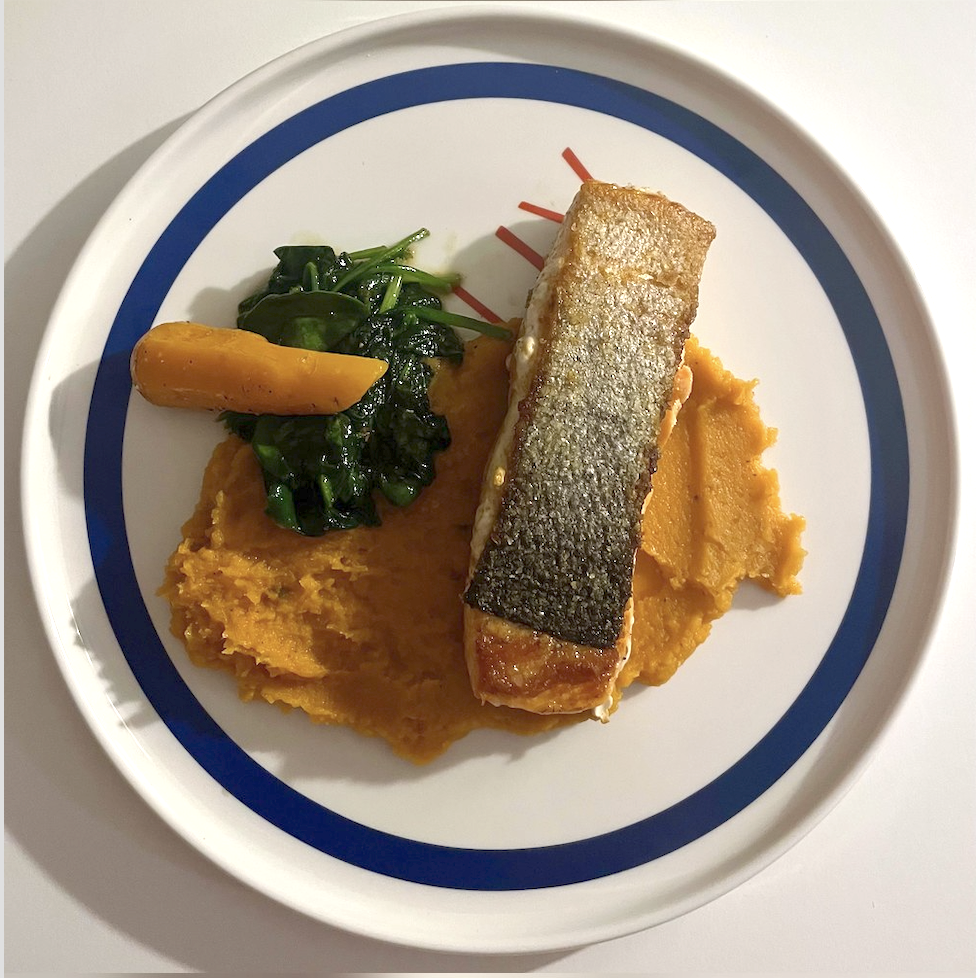

Crispy skin salmon served with creamy sweet potato mash, buttery Dutch carrots and garlic sauteed spinach.
This is a fast weeknight plate that still feels restaurant-style, balancing rich omega-3 salmon with colourful vegetables.

2 servings
Prep: 10 mins • Cook: 25 mins • Base: 2 servings • Easy
Plate mash first, top with crispy skin salmon, then add carrots and spinach to the side. Finish with lemon wedges just before serving.